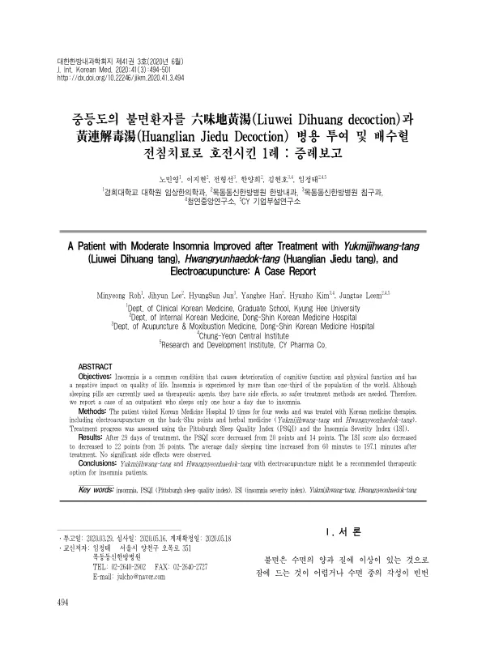

A Patient with Moderate Insomnia Improved after Treatment with Yukmijihwang-tang (Liuwei Dihuang tang), Hwangryunhaedok-tang (Huanglian Jiedu tang), and lectroacupuncture: A Case Report
Roh M, Lee J, Jun H, Han Y, Kim H, Leem J
The Journal of Internal Korean Medicine 41(3):494-501

첫 장 · 오픈액세스First page · open access
논문 소개Summary
불면은 세계 인구의 3분의 1 이상이 겪고 그중 10~15%는 만성 불면을 호소합니다. 정신질환 진단 및 통계 편람 5판은 잠들기 어렵거나 자다 깨어 다시 잠들기 어려운 증상이 주 3회 이상 3개월 넘게 이어지면서 사회적·직업적 기능에 뚜렷한 손상을 일으킬 때 불면장애로 봅니다. 잠을 못 자면 인지 기능과 신체 기능이 떨어지고 사고가 나기 쉬우며 업무 수행과 삶의 질까지 내려갑니다. 수면제는 단기 복용의 효과는 입증되었으나 장기 복용의 효과는 뚜렷하지 않고 부작용 위험이 크며, 장기 약물치료의 위험을 알리는 보고는 늘고 있습니다.
하루 한 시간밖에 자지 못하는 외래 환자의 기록입니다. 4주 동안 열 차례 내원해 배수혈 전침과 한약 치료를 받았습니다. 한약은 육미지황탕과 황련해독탕을 함께 썼습니다. 경과는 피츠버그 수면질 지수와 불면 심각도 지수로 평가했습니다.
29일 뒤 피츠버그 수면질 지수는 20점에서 14점으로, 불면 심각도 지수는 26점에서 22점으로 내려갔습니다. 하루 평균 수면 시간은 60분에서 197.1분으로 늘었습니다. 이렇다 할 부작용은 없었습니다.
숫자를 나란히 놓으면 어긋나 보이는 데가 있습니다. 수면 시간은 세 배 넘게 늘었는데 두 척도의 점수 변화는 크지 않았습니다. 불면 심각도 지수는 26점에서 22점으로 4점 내려갔을 뿐입니다. 한 시간 자던 사람이 세 시간 남짓 자게 된 것은 큰 변화지만, 그 정도로는 여전히 불면이 심한 범위에 남아 있다는 뜻으로 읽힙니다.
한계는 증례 하나이고 전침과 한약을 함께 썼다는 점, 관찰 기간이 4주에 그쳤다는 점입니다.
More than a third of the world's population experiences insomnia, and 10 to 15% of them report chronic insomnia. The fifth edition of the Diagnostic and Statistical Manual of Mental Disorders defines insomnia disorder as difficulty initiating or maintaining sleep, or waking early and being unable to return to sleep, occurring at least three nights a week for more than three months and causing marked distress or impairment in social, occupational or other important functioning. Lost sleep costs cognitive and physical function, raises the risk of accidents, and drags down work performance and quality of life. Hypnotics have proven short-term effect but unclear long-term effect and considerable risk of adverse effects, and reports of the hazards of long-term pharmacotherapy continue to accumulate.
This is the record of an outpatient sleeping only one hour a day. Over four weeks she attended ten times for electroacupuncture at the back-Shu points and herbal medicine — Yukmijihwang-tang together with Hwangnyeonhaedok-tang. Progress was assessed with the Pittsburgh Sleep Quality Index and the Insomnia Severity Index.
After 29 days the Pittsburgh Sleep Quality Index had fallen from 20 to 14 and the Insomnia Severity Index from 26 to 22. Average daily sleeping time rose from 60 minutes to 197.1 minutes. No significant side effects were observed.
Set the numbers side by side and something does not quite line up. Sleep time more than tripled while the two scale scores moved comparatively little — the Insomnia Severity Index by four points, from 26 to 22. Going from one hour of sleep to a little over three is a large change, but on these scales it still reads as remaining within severe insomnia.
The limitations are a single case, electroacupuncture and herbal medicine used together, and observation confined to four weeks.
인용Cite
Roh M, Lee J, Jun H, Han Y, Kim H, Leem J. A Patient with Moderate Insomnia Improved after Treatment with Yukmijihwang-tang (Liuwei Dihuang tang), Hwangryunhaedok-tang (Huanglian Jiedu tang), and lectroacupuncture: A Case Report. The Journal of Internal Korean Medicine. 2020;41(3):494-501. doi:10.22246/jikm.2020.41.3.494